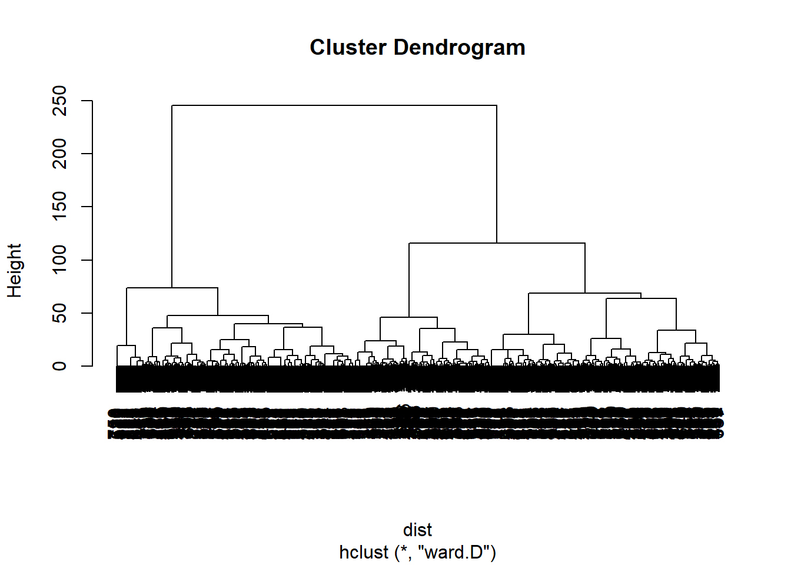
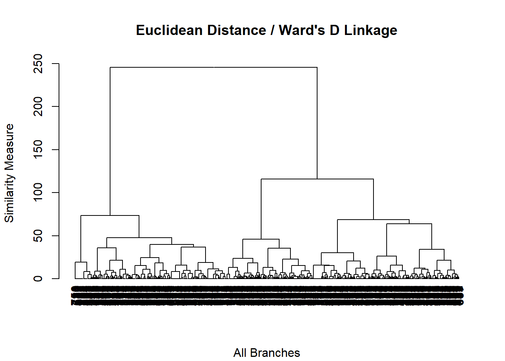
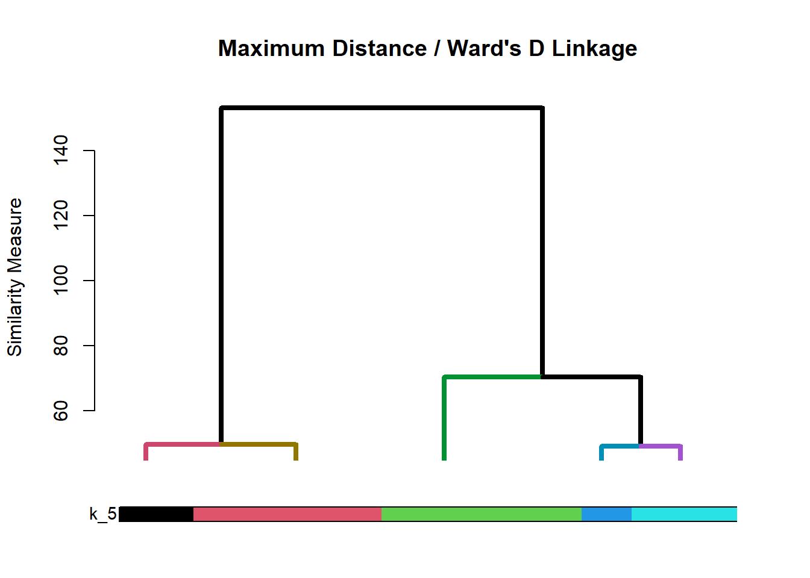
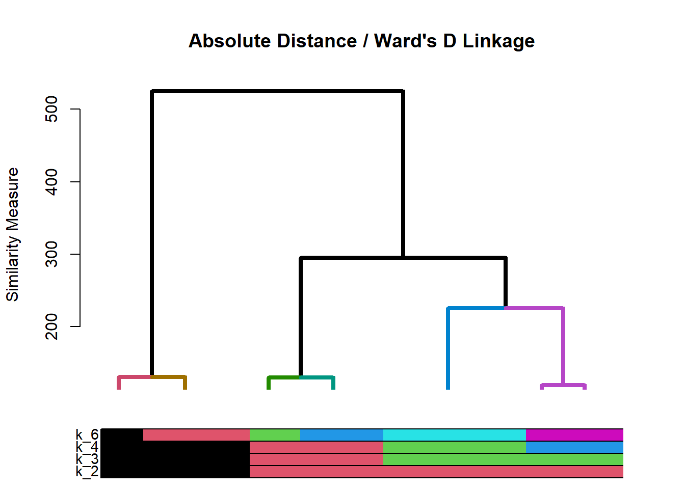
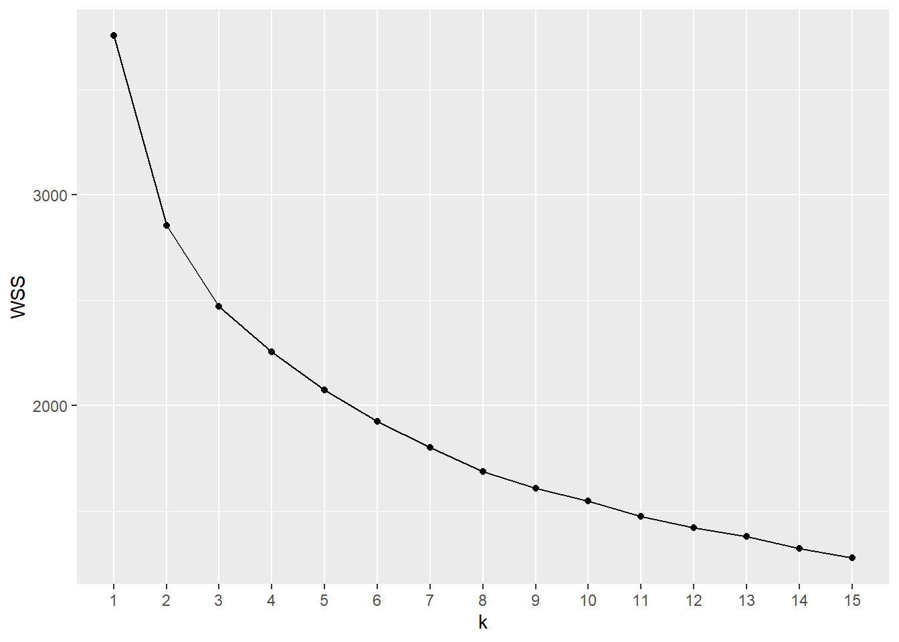
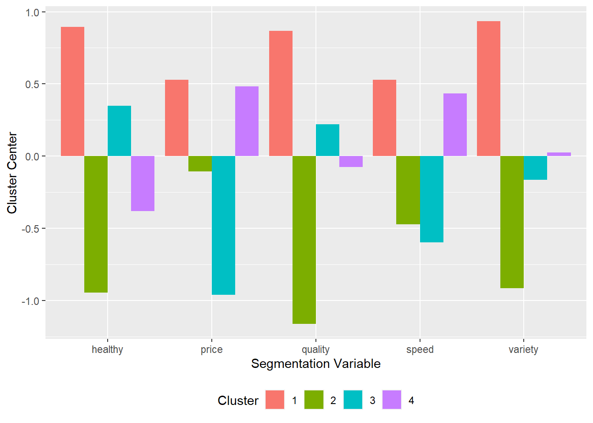

Chapter 5 Cluster Analysis
Sources for this chapter:
- R for Marketing Research ad Analytics, Second Edition (2019). Chris Chapman and Elea McDonnell Feit
Data for this chapter:
The ffseg.rdata is used. Load it now.
# You may need to change the directory load("Data/ffseg.rdata")
5.1 Introduction
Base R is typically sufficient for performing the basics of both hierarchical and k-means cluster analysis, but to get some of the outputs required more easily and more efficiently, I have created some user defined functions. You should download these functions and save them in your working directory.
- clustop.R provides Duda-Hart and psuedo-\(T^2\) indices for hierarchical agglomerative clustering
- cldescr.R describes variables based on cluster membership
- myhc.R produces a dendrogram and cluster sizes and percents for hierarchical agglomerative clustering
- wssplot.R produces a scree plot for \(k\)-means
- ksize.R produces cluster size and proportion tables for \(k\)-means
- kcenters.R produces cluster center table and plot from \(k\)-means
Once saved in your working directory, it is good practice to source them.
source("clustop.R")
source("cldescr.R")
source("myhc.R")
source("wssplot.R")
source("ksize.R")
source("kcenters.R")5.2 Preparation
- For both hierarchical agglomerative and k-means clustering, we usually prepare our data for clustering
- In other words, choose which variable to use for clustering
- Package
dplyris usually the best tool for this
library(dplyr)
# Store variables selected using dplyr to 'segvar'
clvar <- ffseg %>%
select(quality, price, healthy, variety, speed)* To standardize the clustering variables, use the `scale` function
* Usage: `scale(data)`
* To store as a data frame, wrap the command in `data.frame()`# Standardize 'clvar' df and store as 'sc.clvar'
sc.clvar <- data.frame(scale(clvar)) 5.3 Hierarchical Agglomerative Clustering
5.3.1 Base R
- In Base R, hierarchical cluster analysis is done in multiple steps,
- Use the
dist()function to create a similarity/dissimilarity matrix - Use the
hclust()function to perform hierarchical cluster analysis on the matrix from (1) - Determine how many clusters are desired using a dendrogram and/or the stopping indices from package
NbClust
- Use the
5.3.1.1 Creating the similarity/dissimilarity matrix
- Usage:
dist(data, method="")where:datais the (scaled) cluster variable datamethod=""indicates the distance measure:method="euclidean"provides Euclidean distancemethod="maximum"provides Maximum distancemethod="manhattan"provides Absolute distancemethod="binary"provides a distance measure for a set of binary-only variables- NOTE: other choices exist, but for MKT 4320, our focus is on these four
# Create the similarity/dissimilarity matrix and save as object 'dist'
dist <- dist(sc.clvar, # Scaled data from earlier
method="euclidean") # Euclidean distance measure5.3.1.2 Perform hierarchical clustering
- Usage:
hclust(d, method="") where: *dis the similarity/dissimilarity matrix *method="“indicates the linkage method: *method=”single“provides Single linkage *method=”complete“provides Complete linkage *method=”average“provides Average linkage *method=”ward.D"` provides Ward’s linkage * NOTE: other choices exist, but for MKT 4320, our focus is on these four
# Preform hierarchical clustering and save as object 'hc'
hc <- hclust(dist, # similarity/dissimilarity matrix from earlier
method="ward.D") # Ward's linkage method
# NOTE: The similarity/dissimilarity matrix can be done within the call
# to 'hclust'
hc1 <- hclust(dist(sc.clvar, method="euclidean"), method="ward.D")5.3.1.3 Create a dendrogram
- Usage:
plot(x)where:xis a hierarchical clustering object
# Create dendrogram of object hc
plot(hc)
5.3.1.4 Stopping indices
- To get the Duda-Hart index, and the pseudo-\(T^2\), the
NbClustpackage is used- This package is not available in BGSU’s Virtual Computing Lab
- Usage:
NbClust(data, distance="", method="", min.nc=, max.nc=, index="")$All.indexwhere:datais the (scaled) cluster variable datadistance=""indicates the distance measure using the same options from thedistfunction abovemethod=""indicates the linkage method using the same options from thehclustoption abovemin.nc=andmax.nc=indicate the minimum and maximum number of clusters to examineindex=""indicates what measure is wanted:index="duda"uses the Duda-Hart indexindex="pseudot2uses the pseudo-\(T^2\) index
$All.indexrequests only the index values be returned
# After installing package for the first time, load the 'NbClust' package
library(NbClust)
# Get Duda-Hart Index
NbClust(sc.clvar, # Scaled cluster variable data from earlier
distance="euclidean", # Euclidean distance measure
method="ward.D", # Ward's linkage
min.nc=1, # Show between 1 and...
max.nc=10, # ... 10 clusters
index="duda")$All.index # Request Duda-Hart index 1 2 3 4 5 6 7 8 9 10
0.7974 0.8367 0.8435 0.8490 0.7448 0.8628 0.8222 0.8206 0.6950 0.6470 # Get pseudo-T2
NbClust(sc.clvar, distance="euclidean", method="ward.D",
min.nc=1, max.nc=10, index="pseudot2")$All.index 1 2 3 4 5 6 7 8
190.5756 88.3818 54.7376 50.5151 58.5770 41.3604 36.1142 40.0002
9 10
46.9583 40.9146 5.3.2 User Defined Functions
The
myhc.Ruser defined function can produce the results with one or two passes of the function- Requires the following packages:
dendextenddplyrNbClust
- Requires the following packages:
The results should be saved to an object
Usage:
myhc(data, dist="", method="", cuts, clustop="")where:datais the (scaled) cluster variable datadist=""indicates the distance measure:dist="euc"provides Euclidean distancedist="euc2"provides Euclidean Squared distancedist="max"provides Maximum distancedist="abs"provides Absolute distancedist="bin"provides a distance measure for a set of binary-only variables
method=""indicates the linkage method:method="single"provides Single linkagemethod="complete"provides Complete linkagemethod="average"provides Average linkagemethod="ward"provides Ward’s linkage
cutsindicates how many clusters (optional):- Examples:
cuts=3;cuts=c(2,4,5)
- Examples:
clustop=""indicates if stopping indices are wantedclustop="Y"if indices are wantedclustop="N"if indices are not wanted
Objects returned:
- If
cutsare provided:- Dendrogram of the top \(n\) branches, where \(n\) is the highest number of clusters provided by
cuts - Table of cluster sizes (
$kcount) - Table of cluster size percentages (
$kperc) hclustobject ($hc)- Stopping indices for 1 to 10 clusters, if requested (
$stop)
- Dendrogram of the top \(n\) branches, where \(n\) is the highest number of clusters provided by
- If
cutsare not provided:- Dendrogram with all branches
- Stopping indices for 1 to 10 clusters, if requested (
$stop)
- If
Examples:
- No cuts with stopping indices
# Both myhc.R and clustop.R need to be "sourced" eg1 <- myhc(sc.clvar, "euc", "ward", clustop="Y")Loading required package: dendextend--------------------- Welcome to dendextend version 1.15.2 Type citation('dendextend') for how to cite the package. Type browseVignettes(package = 'dendextend') for the package vignette. The github page is: https://github.com/talgalili/dendextend/ Suggestions and bug-reports can be submitted at: https://github.com/talgalili/dendextend/issues You may ask questions at stackoverflow, use the r and dendextend tags: https://stackoverflow.com/questions/tagged/dendextend To suppress this message use: suppressPackageStartupMessages(library(dendextend)) ---------------------Attaching package: 'dendextend'The following object is masked from 'package:flextable': rotateThe following object is masked from 'package:stats': cutree
# Dendrogram will get produced automatically # Call eg1$stop to get table of stopping indices eg1$stopNum.Clusters Duda.Hart pseudo.t.2 1 1 0.7974 190.5756 2 2 0.8367 88.3818 3 3 0.8435 54.7376 4 4 0.8490 50.5151 5 5 0.7448 58.5770 6 6 0.8628 41.3604 7 7 0.8222 36.1142 8 8 0.8206 40.0002 9 9 0.6950 46.9583 10 10 0.6470 40.9146- One cut without stopping indices
eg2 <- myhc(sc.clvar, "max", "ward", cuts=5, clustop="N")
# Dendrogram will get produced automatically # call eg2$kcount and eg2$kperc to get cluster sizes eg2$kcountCluster k_5_Count 1 1 244 2 2 229 3 3 127 4 4 91 5 5 61eg2$kpercCluster k_5_Percent 1 1 32.45 2 2 30.45 3 3 16.89 4 4 12.10 5 5 8.11- Multiple cuts without stopping indices
eg3 <- myhc(sc.clvar, "abs", "ward", cuts=c(2,3,4,6), clustop="N")
# Dendrogram will get produced automatically # call eg3$kcount and eg3$kperc to get cluster sizes eg3$kcountCluster k_2_Count k_3_Count k_4_Count k_6_Count 1 1 537 344 215 205 2 2 215 215 205 153 3 3 NA 193 193 139 4 4 NA NA 139 120 5 5 NA NA NA 73 6 6 NA NA NA 62eg3$kpercCluster k_2_Percent k_3_Percent k_4_Percent k_6_Percent 1 1 71.41 45.74 28.59 27.26 2 2 28.59 28.59 27.26 20.35 3 3 NA 25.66 25.66 18.48 4 4 NA NA 18.48 15.96 5 5 NA NA NA 9.71 6 6 NA NA NA 8.24
5.3.3 Cluster membership
- Use the
cutree()function to get cluster membership for the specified number of clusters - Usage:
cutree(tree, k=)where:treeis anhclustobject from Base R methods or frommyhcfunctionk=is the number of clusters to retrieve
- Assign cluster membership to original data, cluster variables, or both
# Create new variables in original data based on cluster membership
# Need to use 'as.factor()' to classify variable as factor
ffseg$K3 <- as.factor(cutree(hc, # 'hclust' object from Base R earlier
k=3)) # Number of clusters to retrieve
ffseg$K4 <- as.factor(cutree(eg3$hc, # 'hclust' object from call to 'myhc' earlier
k=4)) # Number of clusters to retrieve
# Create new data frame of scaled clustering variables
# with cluster membership appended
# 'cbind' stands for column bind
sc.cldesc <- cbind(sc.clvar, # Scaled cluster variables
K3=as.factor(cutree(hc, k=3))) # Cluster membership variable5.4 k-Means Clustering
5.4.1 Base R
- \(k\)-Means clustering is done mostly in Base R, but there is a couple user defined functions to help
- Process:
- Run
wssplot.Ruser defined function to get a scree plot - Based on scree plot, use
ksize()user defined function to examine the cluster sizes for several solutions - Run
kmeans()for desired solution - Assign cluster membership for desired number of clusters to original data, cluster variables, or both
- Run
5.4.1.1 Scree plot
- The
wssplot.Ruser defined function produces a scree plot for 1 to \(n\) clusters- Requires the
ggplot2package
- Requires the
- Usage:
wssplot(data, nc=, seed=)where:datais the (scaled) cluster variable datanc=takes an integer value and is the maximum number of clusters to plot; default is 15seed=is a random number seed for reproducible results; default is 4320
# 'wssplot.R' must first be sourced (if not already)
wssplot(sc.clvar) # Produces scree plot with default 15 clusters and 4320 seed
5.4.1.2 Cluster sizes
- The
ksize.Ruser defined function produces a count and proportion tables for the selected \(k\) solutions - The results should be saved to an object
- Usage:
ksize(data, centers=, nstart=, seed=)where:datais the (scaled) cluster variable datacenters=takes one or more integers for the \(k\) cluster solutions to be examinednstart=takes an integer value for the number of random starting points to try; default is 25seed=is a random number seed for reproducible results; default is 4320
- Objects returned:
- Table of cluster sizes (
$kcount) - Table of cluster size percentages (
$kperc)
- Table of cluster sizes (
# 'ksize.R' must first be sourced (if not already)
ks <- ksize(sc.clvar, # Scaled cluster variables from earlier
centers=c(3,4,5), # Request for 3, 4, and 5 cluster solutions
nstart=25, # Request 25 random starting sets
seed=4320) # Set seed to 4320 for reproducible results
ks$kcount # Cluster sizes Num_Clusters k_3_Count k_4_Count k_5_Count
1 1 308 211 205
2 2 238 191 167
3 3 206 187 150
4 4 NA 163 124
5 5 NA NA 106ks$kperc # Cluster percentages Num_Clusters k_3_Percent k_4_Percent k_5_Percent
1 1 40.96 28.06 27.26
2 2 31.65 25.40 22.21
3 3 27.39 24.87 19.95
4 4 NA 21.68 16.49
5 5 NA NA 14.105.4.1.3 kmeans function
- Usage:
kmeans(data, centers=, nstart=)where:datais the (scaled) cluster variable datacenters=takes an integer value for the number of clusters desirednstart=takes an integer value for the number of random starting points to try
- Results should be assigned to an object
- NOTE 1: For reproducible results,
set.seed()should be run immediately before runningkmeans() - NOTE 2:
nstart=should be same value as above - Use the saved
$clusterobject to assign cluster membership
set.seed(4320) # Set random number seed
# Run kmeans() for 4 clusters and assign to object k3
k4 <- kmeans(sc.clvar, # Scaled cluster variables from earlier
centers=4, # Request 3-cluster solution
nstart=25) # Request 25 random starting sets
ffseg$KM4 <- as.factor(k4$cluster)5.5 Describing clusters
5.5.1 cldescr.R
- The
cldescr.Ruser defined function can be used to describe the clusters on both cluster variables and other variables that may be in the dataset - The results should be assigned to an object
- Usage:
cldescr(data, var="", vtype=c("F", "C"), cvar=""where:datais the original data or (scaled) cluster variable data with cluster membership attachedvar=""contains the name of the variable to examine by cluster membershipvtype=""takes “F” ifvaris a factor variable or “C” ifvaris a continuous variablecvar=""contains the name of the cluster membership variable
- If
vtype="F"with more than two levels, the factor variable is split into dummy variables (1=True, 0=False) for each level of the factor - If
vtype="F"with only two levels, the only the first level of the factor variable is shown as a dummy variable (1=True, 0=False) - If
vtype="C"a list (usingc()) of variables can be provided - Objects returned
- Table of means (
$means)- If
vtype="F", one column per level of factor
- If
- Table of ANOVA p-values (
$aovp) - Table(s) of Tukey HSD multiple comparisons for any variables where the ANOVA p-value\(<0.1\) (
tukey)
- Table of means (
5.5.2 kcenters.R
- For \(k\)-Means, the
kcenters.Ruser defined function can be used to describe the cluster centers- Requires
ggplot2package
- Requires
- The results should be assigned to an object
- Usage:
kcenters(kobject)where:kobjectis the name of a saved \(k\)-means object
- Objects returned
- Table of means (
$table) ggplotobject ($plot)
- Table of means (
5.5.3 Examples
- Describing hierarchical clustering using clustering variables
# 'cldescr.R' must first be sourced (done above)
hc.cv <- cldescr(sc.cldesc, # Scaled cluster variables w/ cluster membership
var=c("quality", "price", "healthy", # List of cluster variables
"variety", "speed"),
vtype="C", # All variables are continuous
cvar="K3") # Cluster membership variable
hc.cv$means Cluster quality price healthy variety speed
1 1 0.7033 0.0515 0.7903 0.5729 0.3159
2 2 -0.5419 0.5722 -0.5865 -0.3641 0.0258
3 3 -0.3189 -1.0589 -0.3964 -0.3907 -0.5989hc.cv$aovp Variable p.value
1 quality 0
2 price 0
3 healthy 0
4 variety 0
5 speed 0# hc.cv$tukey # NOT SHOWN BECAUSE USUALLY ALL SIGNIFICANTLY DIFFERENT - Describing hierarchical clustering or \(k\)-means using non-clustering continuous variables done the same as previous example
- Describing hierarchical clustering or \(k\)-means using non-clustering factor variables
# Factor variable 'live' on k-means solution
km.fv <- cldescr(ffseg, var="live", vtype="F", cvar="KM4")
km.fv$means Cluster Commuter Off.Campus On.Campus
1 1 0.1123 0.4545 0.4332
2 2 0.0613 0.4417 0.4969
3 3 0.1623 0.3665 0.4712
4 4 0.0758 0.4929 0.4313km.fv$aovp Variable p.value
1 Commuter 0.0069
2 Off.Campus 0.0805
3 On.Campus 0.5349km.fv$tukey$Commuter
diff p adj
2-1 -0.0509 0.3977
3-1 0.0500 0.3776
4-1 -0.0365 0.6286
3-2 0.1010 0.0101
4-2 0.0145 0.9681
4-3 -0.0865 0.0229
$Off.Campus
diff p adj
2-1 -0.0128 0.9950
3-1 -0.0881 0.3101
4-1 0.0383 0.8677
3-2 -0.0752 0.4848
4-2 0.0512 0.7550
4-3 0.1264 0.0528# Factor variable 'gender' on hierarchcial clustering solution
hc.fv <- cldescr(ffseg, var="gender", vtype="F", cvar="K3")
hc.fv$means Cluster Female
1 1 0.8182
2 2 0.6783
3 3 0.5917hc.fv$aovp Variable p.value
1 Female 0hc.fv$tukey diff p adj
2-1 -0.1399 0.0004
3-1 -0.2265 0.0000
3-2 -0.0866 0.1100- Describing \(k\)-means clustering using cluster centers
km.cent <- kcenters(k4)
km.cent$table quality price healthy variety speed Cluster
1 0.86830982 0.5282993 0.8952494 0.93322588 0.5295407 1
2 -1.15981355 -0.1062743 -0.9446355 -0.91358591 -0.4716217 2
3 0.22194885 -0.9606064 0.3494969 -0.16288116 -0.5958141 3
4 -0.07448606 0.4834435 -0.3800472 0.02612117 0.4343635 4km.cent$plot